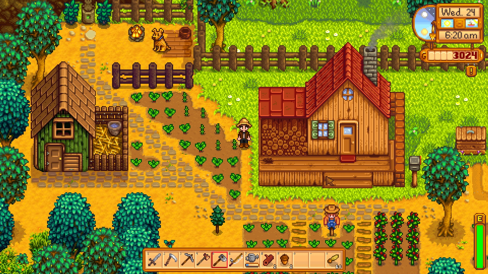
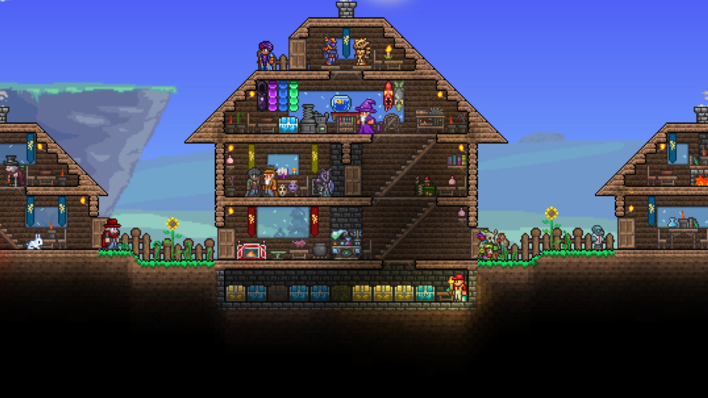

- Retro stílus: A pixel art játékok általában egy régebbi, retro stílusra építenek, amely visszahozza az 8 vagy 16-bites videojátékok élményét.
- Egyszerűség: Bár a pixel art részletes lehet, a grafika egyszerűsége és minimalizmusa is nagy jellemzője. A karakterek és környezetek általában alapvető formákból és színekből állnak össze.
- Hangulat: A pixel art játékok gyakran erős atmoszférával rendelkeznek, és képesek megidézni egy bizonyos hangulatot vagy érzést, ami sokszor nosztalgikus vagy retro.
- Alacsony költség: A pixel art stílusú grafikák sokkal kevesebb erőforrást igényelnek, mint a modern, magas felbontású grafikák, ezáltal olcsóbban és gyorsabban fejleszthetők.
- Kreativitás: A pixel art játékokban a korlátozott grafikai lehetőségek ellenére a fejlesztőknek mégis széles körű kreativitást kell alkalmazniuk a karakterek, környezetek és animációk létrehozásához.
- Népszerűség: Bár a pixel art stílusú játékoknak nosztalgikus vonzerejük van, mégis nagyon népszerűek a mai napig, és sokféle platformon elérhetőek, beleértve a mobiltelefonokat, a számítógépeket és a konzolokat is.
Üdvözlünk a Gamedev Világában!
Ismerd meg a játékipar izgalmas világát, és fedezd fel a legfrissebb trendeket, technológiákat és inspirációkat a gamedev területén. Weboldalunkon széleskörű tartalmakat találsz, legyen szó fejlesztői tippekről, művészeti irányelvekről vagy akár üzleti stratégiákról.
Böngészd át cikkeinket és interjúinkat, amelyek mind a kezdő, mind a tapasztalt fejlesztők számára értékes információkat kínálnak. Ismerd meg a legújabb eszközöket és platformokat, amelyek segítségével létrehozhatod álmaid játékát, és nézd át a játék típusokat, hogy inspirálódj a saját projektjeidhez.
Ezenkívül statisztikákat is találsz a különböző játékműfajokról, hogy segítsenek eligazodni az iparágban és kiválasztani a legmegfelelőbb stílust a projektjeidhez.

Pixel Art Játék
Pixel art játékok olyan videojátékok, amelyekben a grafika pixelenként vagy kis blokkokban van ábrázolva, általában alacsony felbontásban. Ezek a játékok gyakran visszanyúlnak a régebbi videojáték időszakokhoz, amikor a korlátozott hardveres erőforrások miatt a pixelenkénti grafika volt a normális.
Néhány jellemzőjük:

2D Játék
A 2D-s játékok olyan videojátékok, amelyek kétdimenziós térben játszódnak, vagyis a játékmezőt csak két dimenzióban, általában függőlegesen és vízszintesen lehet mozgatni. Ezek a játékok általában oldalnézetből vagy felülnézetből jelenítik meg a játéktér elemeit és karaktereit.
Néhány jellemzőjük:
- Grafika és stílus: A 2D-s játékok általában rajzolt vagy animált grafikával rendelkeznek, és különböző stílusokban lehetnek megvalósítva, például rajzfilm, képregény vagy pixel art stílusban.
- Játékmenet és irányítás: A 2D-s játékokban a játékos általában egy képernyőn mozog, akár vízszintesen, akár függőlegesen. Az irányítás általában egyszerűbb, mivel csak két dimenzióban kell navigálni a karaktert.
- Platformerek: Sok 2D-s játék a platformerek kategóriába tartozik, ahol a játékosnak ugrálnia és mászni kell a különböző platformok között, miközben kihívásokat és akadályokat kell legyőznie.
- Puzzle játékok: Egyes 2D-s játékok logikai és fejtörő elemeket tartalmaznak, ahol a játékosnak meg kell oldania különböző feladványokat és rejtvényeket.
- Fighting játékok: A 2D-s harcolós játékokban a játékosok általában oldalról nézetből irányítják a karaktereket, és küzdenek egymással speciális képességek és harci mozdulatok segítségével.
- Retro érzés: Sok 2D-s játék visszanyúl a videojátékok korábbi időszakához, és nosztalgikus élményt nyújt azoknak, akik szeretik az egyszerűbb grafikákat és játékmenetet.